Introduction
This workshop shows how to use the SimpleLink™ Wi-Fi® MQTT library, which enables you to connect as a MQTT Client to a cloud MQTT broker and/or create a local MQTT broker that can serve as a gateway for local MQTT clients.
This workshop will walk you through an overview of the MQTT protocol and then walk through the bring up of two MQTT demos:
- MQTT Client Example
- MQTT Client-Server Example
Prerequisites
Software
- Code Composer Studio v7.4 or later
- Must have SimpleLink CC3xxx Wireless support
- Make sure that CCS is using the latest updates: Help → Check for Updates
- CC3220 SDK v1.60.00.04 or later
- UniFlash v4.2.1.15 or later.
- Terminal emulator program such as TeraTerm or PuTTY
Hardware
- 2x CC3220S or CC3220SF LaunchPad™ (CC3220S-LAUNCHXL or CC3220SF-LAUNCHXL)
- 2x Micro-USB cable (included with LaunchPad/BoosterPack)
- 802.11b/g/n (2.4-GHz) Wireless Access Point (AP)
- Smartphone/laptop with any MQTT client app (e.g. MyMQTT for Android, ICPDAS MQTT for iOS, or HiveMQ MQTT Websocket Client for browser)
Note
The MQTT Client-Server exercise in this lab requires two CC3220 LaunchPads. The MQTT Client exercise can be completed with one LaunchPad.
MQTT Overview
MQTT Protocol
MQTT (Message Queue Telemetry Transport) protocol is a light-weight machine-to-machine connectivity protocol. It is based on a publish/subscribe messaging model and is designed to be used on the top of TCP/IP protocol. Key benefits of this protocol include small code footprint and a low network bandwidth requirement. Other features include faster response time, low power requirement, and ease of scalability. All of these advantages make it an ideal candidate for a communication protocol in embedded devices intended to implement IOT (Internet of Things) applications.
A Simple MQTT infrastructure contains a broker (like a central hub) connected to multiple clients, each of which has the capability of publishing on any topic (token). The broker has the responsibility of sending the message published on any topic to all the subscribers of that topic. A typical MQTT network has many more features and configuration parameters.
SimpleLink MQTT Library
The MQTT library abstracts the underlying intricacies of a MQTT network and provides the user application with an intuitive and easy to use API to implement the MQTT protocol on the CC3220 device. Separate modules and APIs are used for the MQTT Server and the MQTT Client functionality.
The Client API includes the following:
- Create (or delete) a client instance
- Connect to an MQTT server (based on URL or IP Address)
- Subscribe (or unsubscribe) to a topic
- Publish a topic and a message
- Run the client main task loop
The Server has a similar interface excluding the Connect command. The source for the MQTT library can be found under simplelink_cc32xx_sdk_x_xx_xx_xx\source\ti\net\mqtt
MQTT Client Demo
This application uses the MQTT Client API to communicate with an Eclipse M2M broker. Three LEDs on the Launchpad can be controlled from a remote MQTT client by publishing messages on appropriate topics. Similarly, a message can be published on pre-configured topics (defined in the code) by pressing a button on the host platform.
Task 1: Preparing the MQTT Client application
In CCS, import the
mqtt_client_CC3220SF_LAUNCHXL_tirtos_ccsexample (simplelink_cc32xx_sdk_x_xx_xx_xx/examples/rtos/CC3220SF_LAUNCHXL/demos/mqtt_client/tirtos/ccs).CC3220S LaunchPad
If you are using a CC3220S LaunchPad, assume all given folder and code instructions can be changed from
CC3220SFtoCC3220S. For example, here you should import themqtt_client_CC3220S_LAUNCHXL_tirtos_ccsexample fromsimplelink_cc32xx_sdk_x_xx_xx_xx/examples/rtos/CC3220S_LAUNCHXL/demos/mqtt_client/tirtos/ccs.Set the local access point parameters (
SSID_NAME,SECURITY_TYPEandSECURITY_KEY) defined innetwork_if.hso they are configured according to your local access point.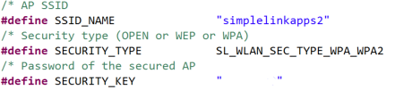Take a look at your MQTT settings. They can be found in the macros at the beginning of
mqtt_client_app.c. The important ones are:SERVER_ADDRESSPORT_NUMBER- Subscription topics:
SUBSCRIPTION_TOPIC0SUBSCRIPTION_TOPIC1- etc.
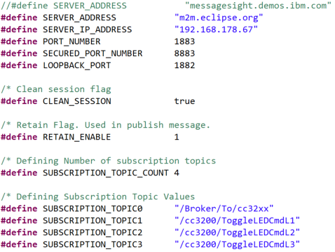
ClientId(must be unique)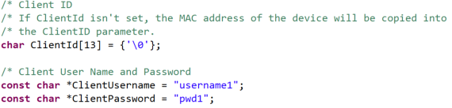- If
ClientIdis not specified, it is by default set to the local MAC Address inSetClientIdNamefromMacAddress()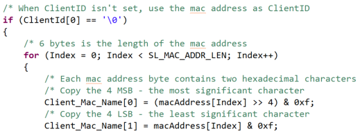 - Publishing topics:
publish_topicpublish_data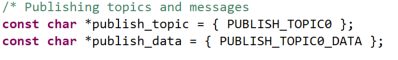
In this example, the client subscribes to 4 topics and publishes to 1 topic.
Task 2: Setting up the MQTT Client demo
Open the UniFlash tool and add the entire "dummy" certificate chain as user files. This is shown in detail in section 2.4 and steps 1-4 of section 2.4.1 of the SimpleLink Wi-Fi CC3220 Getting Started Guide.
Flash (with the UniFlash tool) and reset the LaunchPad to start the application, or start a CCS Debug session to load and run the application.
Open a terminal emulation program such as TeraTerm and select the XDS110 Class Application/User UART port.
UART Configuration
Baud rate: 115200
Data: 8 bit
Parity: None
Stop: 1 bit
Flow control: None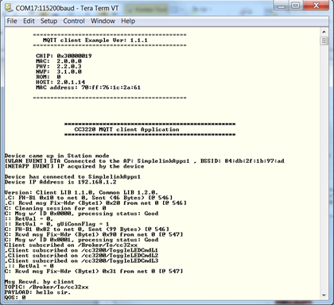On a mobile device, use the installed MQTT client (see prerequisite) to connect to the MQTT broker used by the CC3220: m2m.eclipse.org
- Verify that the port is 1883 and select a unique Client ID.
- Leave all other settings as default, and Connect.
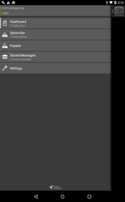
Task 3: Running the MQTT Client application
Send a message from the Eclipse M2M client to the SimpleLink device by publishing the
/cc3200/ToggleLEDCmdL<x>topic (thexshould be between 1 and 3). You should see the corresponding LED toggle on the MCU device.Use
/Broker/To/cc32xxtopic to send a text message that will be printed on the console.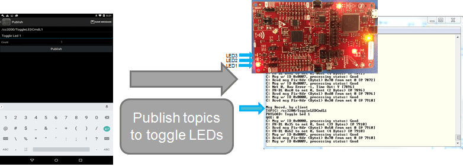Using the MQTT client app, subscribe to the topic published by the SimpleLink client (
/cc32xx/ButtonPressEvtSw2).Send a message from the SimpleLink device to the Eclipse client by pressing the button on the right side of the Launchpad (or the corresponding button in your setup).
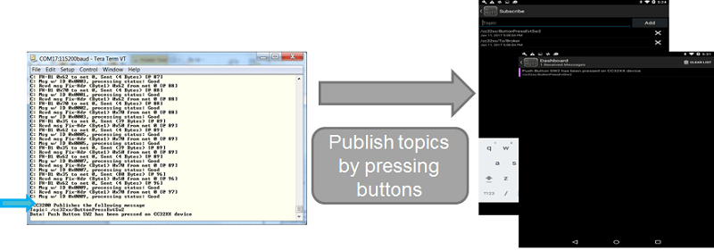Buttons on the LaunchPad
If you have a Rev A CC3220 LaunchPad, you will want to use the SW3 button. If you have a Rev B, you will want to use the SW2 button. For more information on LaunchPad revisions, refer to the CC3220 LaunchPad Development Kit Hardware User's Guide.
MQTT Client-Server Demo
In this example, the SimpleLink Wi-Fi device is running a MQTT server (“local broker”) which allows local MQTT clients to communicate with each other. Simultaneously, it is also running a client which is connected to a cloud broker. This operation mode is also called “bridge mode.” The interface between the on-board client and the server is such that the local clients can also communicate with the remote MQTT clients, which are connected to the same cloud broker as the on-board client.
MQTT allows remote control of an IOT device through a cloud-based broker. Every transaction through the external broker has a fee. The Client-Server demo demonstrates a solution for the local network that will eliminate the need for cloud broker access.
Within the local (home) network, the controlling device (typically a mobile phone) should connect to a local server rather than the cloud broker. The sample application demonstrates a working setup where multiple local MQTT clients can communicate with each other as well as talk to a remote client via an external broker.
For simplicity, the following abbreviations are used:
- LC: MQTT Client (Local Client)
- This can be the SimpleLink platform(s) running the MQTT Client application or a smartphone
- LS: One SimpleLink platform running MQTT Server/Bridge (Local Server)
- RC: Remote MQTT Client (mobile MQTT app connected to the Eclipse MQTT Broker)
- BR: External MQTT Broker (Eclipse MQTT Server, http://m2m.eclipse.org)
- AP: The access point with internet connection
LC1, LC2, and LS are all connected to the same AP. The server address configuration for LC(s) is the local address of LS.
Task 4: Setting up the MQTT Server/Bridge
Import the
mqtt_client_server_CC3220SF_LAUNCHXL_tirtos_ccsexample (simplelink_cc32xx_sdk_x_xx_xx_xx/examples/rtos/CC3220SF_LAUNCHXL/demos/mqtt_client_server/tirtos/ccs).Take a look at your settings for the MQTT Server/Bridge. They can be found in the macros at the beginning of
mqtt_server_app.c. The important ones are:SERVER_ADDRESSClientIdpublish_topicSUBSCRIPTION_TOPIC0ENROLL_TOPIC: These events received by the local MQTT server, will be distributed (published) to the cloud server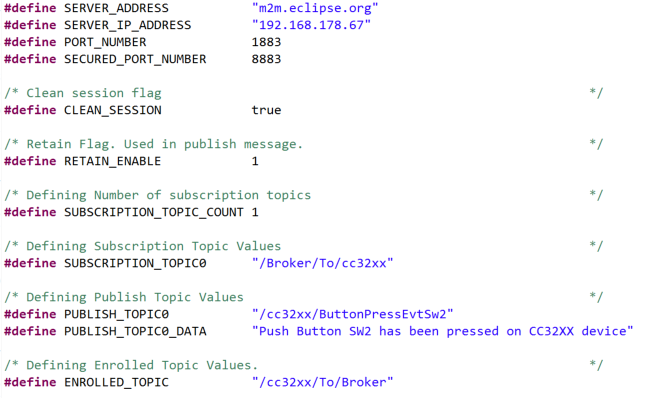
In
network_if.h, update theSSID_NAME,SECURITY_TYPE, andSECURITY_KEYto connect to your own Access Point (like a router).Recompile the MQTT Client-Server application and flash it to your LS (Local Server) device.
Task 5: Setting up the MQTT Client
For additional instructions on CCS debugger, see task 2 of the CC3220 Project Zero lab.
We need to find the server IP address in order to set up the local client. To find the server IP address, start by running the MQTT Client-Server application on the target device with CCS debugger. This is your LS (Local Server).
Open a terminal emulation program such as TeraTerm and select the XDS110 Class Application/User UART port.
UART Configuration
Baud rate: 115200
Data: 8 bit
Parity: None
Stop: 1 bit
Flow control: NoneOnce the terminal is connected, run the Client-Server application and record the IP address. Enter this address in the
SERVER_IP_ADDRESSdefinition inside themqtt_client_app.cof themqtt_clientapplication.Use the rest of settings from the MQTT Client example we completed earlier (task 1).
Search for the
Mqtt_ClientCtxstructure inmqtt_client_app.cin the Variables section. Set the flags and address to the local broker address (shown below). We need the Local Clients to be linked to the Local Server by IP address instead of the example's default URL.MQTTClient_NetAppConnParams_t Mqtt_ClientCtx = { // MQTTCLIENT_NETCONN_URL, // SERVER_ADDRESS, // PORT_NUMBER, 0, 0, 0, // NULL 0, SERVER_IP_ADDRESS, PORT_NUMBER, 0, 0, 0, NULL };mqtt_client_app.c :: Mqtt_ClientCtx
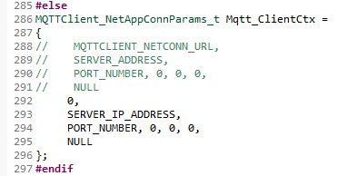Check that the three LEDs are being configured in the board files (
Board.h,CC3220SF_LAUNCHXL.handCC3220SF_LAUNCHXL.c). If missing, add the following code:#define Board_GPIO_LED0 CC3220SF_LAUNCHXL_GPIO_LED_D7 #define Board_GPIO_LED1 CC3220SF_LAUNCHXL_GPIO_LED_D6 #define Board_GPIO_LED2 CC3220SF_LAUNCHXL_GPIO_LED_D5Board.h
typedef enum CC3220SF_LAUNCHXL_GPIOName { CC3220SF_LAUNCHXL_GPIO_SW2 = 0, CC3220SF_LAUNCHXL_GPIO_SW3, CC3220SF_LAUNCHXL_GPIO_LED_D7, CC3220SF_LAUNCHXL_GPIO_LED_D6, CC3220SF_LAUNCHXL_GPIO_LED_D5, CC3220SF_LAUNCHXL_GPIOCOUNT } CC3220SF_LAUNCHXL_GPIOName;CC3220SF_LAUNCHXL.h
GPIO_PinConfig gpioPinConfigs[] = { /* input pins with callbacks */ /* CC3220SF_LAUNCHXL_GPIO_SW2 */ GPIOCC32XX_GPIO_22 | GPIO_CFG_INPUT | GPIO_CFG_IN_INT_RISING, /* CC3220SF_LAUNCHXL_GPIO_SW3 */ GPIOCC32XX_GPIO_13 | GPIO_CFG_INPUT | GPIO_CFG_IN_INT_RISING, /* output pins */ /* CC3220SF_LAUNCHXL_GPIO_LED_D7 */ GPIOCC32XX_GPIO_09 | GPIO_CFG_OUT_STD | GPIO_CFG_OUT_STR_HIGH | GPIO_CFG_OUT_LOW, /* CC3220SF_LAUNCHXL_GPIO_LED_D6 */ GPIOCC32XX_GPIO_10 | GPIO_CFG_OUT_STD | GPIO_CFG_OUT_STR_HIGH | GPIO_CFG_OUT_LOW, /* CC3220SF_LAUNCHXL_GPIO_LED_D5 */ GPIOCC32XX_GPIO_11 | GPIO_CFG_OUT_STD | GPIO_CFG_OUT_STR_HIGH | GPIO_CFG_OUT_LOW, };CC3220SF_LAUNCHXL.c
If you are using the CC3220S instead of the CC3220SF, adapt the code as needed.
Recompile the
mqtt_clientapplication and program this to another CC3220. This is your LC1 (Local Client #1). LC1 should connect to LS.On your mobile app (LC2), connect to the same IP address you found with the MQTT server (task 5, step 3).
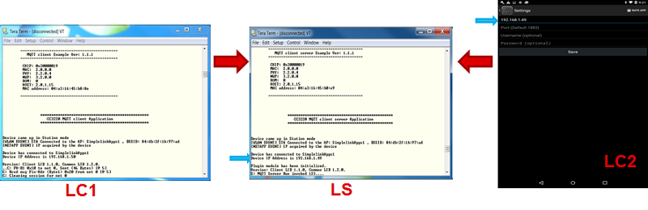
Task 6: Demo Local Communication (LC to LC)
This sequence demonstrates local communication (between two clients on a local network). In this demo, /cc32xx/ButtonPressEvtSw2 is the text for PUBLISH_TOPIC0. This message is triggered by pressing the SW2 on the CC3220 LaunchPad.
Connect both local clients (LC1 and LC2) to the local server (LS).
LC2 subscribes to
PUBLISH_TOPIC0. (Use the text:/cc32xx/ButtonPressEvtSw2.)Press SW2 which makes LC1 publish
PUBLISH_TOPIC0.
Results
- LC2 receives the event (message will be printed through the terminal).
- Note that LS did not subscribe to the PUBLISH_TOPIC0, so LS shows nothing.
- RC (Remote Client) and BR (external broker) show nothing.
Task 7: Demo Remote Control (RC to LC)
This sequence demonstrates communication between a remote client (through the cloud) and an IOT device. In this demo, /Broker/To/cc32xx will be the text for SUBSCRIPTION_TOPIC0. This message is triggered by entering text on RC.
LC1 subscribes to
SUBSCRIPTION_TOPIC0. (Use the text:/Broker/To/cc32xx.)LS (as a client of the BR) also subscribes to the same topic. LS will forward any message it receives from BR to the local network.
Publish the same text of
SUBSCRIPTION_TOPIC0(/Broker/To/cc32xx) from the Remote Client (RC).
Results
- LS receives
SUBSCRIPTION_TOPIC0(see terminal), because topic is subscribed by LS. - LS will publish the message in the local network.
- LC1 receives
SUBSCRIPTION_TOPIC0(see terminal) as a client on the local network. - Note LC2 shows nothing because it did not subscribe to
SUBSCRIPTION_TOPIC0.
Task 8: Add a New Publish Function to MQTT Client
All the following modifications for this task are done within mqtt_client_CC3220SF_LAUNCHXL_tirtos_ccs/mqtt_client_app.c. We will be using this function later in the demos.
Add the function below to
mqtt_client_app.c. This publishes the status of the three LEDs.#include "stdio.h" #define PUBLISH_TOPIC1 "/cc32xx/To/Broker" const char *publish_topic1 = { PUBLISH_TOPIC1 }; static void PublishLedStatusReport() { char pubMsg[20]; /* retreive status of LEDs */ sprintf(pubMsg, "L1=%d, L2=%d, L3=%d", GPIO_read(Board_LED0), GPIO_read(Board_LED1), GPIO_read(Board_LED2)); /* send publish message */ MQTTClient_publish(gMqttClient, (char *)publish_topic1, strlen((char *)publish_topic1), pubMsg, 16, MQTT_QOS_2 | MQTT_PUBLISH_RETAIN); UART_PRINT("\n\r CC3220 Publishes the following message \n\r"); UART_PRINT("Topic: %s\n\r", publish_topic1); UART_PRINT("Data: %s\n\r", pubMsg); }mqtt_client_app.c
Add the
PublishLedStatusReport()function call to the incoming message handler inMqttClient()as shown below.PublishLedStatusReport();mqtt_client_app.c :: MqttClient()
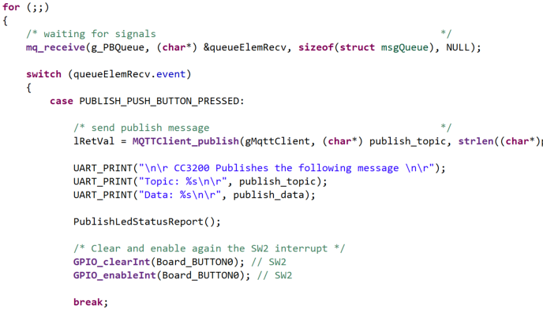Recompile the
mqtt_clientapplication and program this to another CC3220. This is still your LC1 (Local Client #1).
Task 9: Demo Remote Notification (LC to RC)
This sequence demonstrates an IOT device sending a notification to a remote client (through the local server and the cloud broker). In this demo, /cc32xx/To/Broker will be the text for PUBLISH_TOPIC1 and ENROLLED_TOPIC.
Subscribe RC to
PUBLISH_TOPIC1. (Use the text:/cc32xx/To/Broker.)Enroll LS to topic
ENROLLED_TOPICwhich has the same string asPUBLISH_TOPIC1(/cc32xx/To/Broker).- LS subscribes on an
ENROLLED_TOPICwithin the local network (as any other client). Whenever it will receive an enrolled message, LS will publish it to BR.
- LS subscribes on an
Publish
PUBLISH_TOPIC1(/cc32xx/To/Broker) from LC1.
Results
- LS receives
PUBLISH_TOPIC1(prints to terminal) and passes onto BR. - RC receives
PUBLISH_TOPIC1(prints to terminal). - LC2 shows nothing because it did not subscribe to
PUBLISH_TOPIC1.
Technical support
For any questions, please search on the TI SimpleLink Wi-Fi E2E Forum
This work is licensed under a Creative Commons Attribution-NonCommercial-NoDerivatives 4.0 International License.